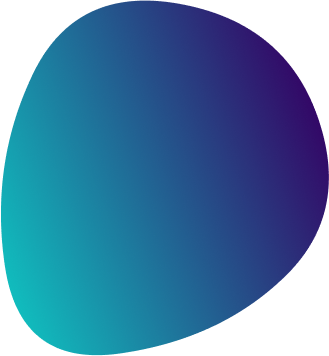
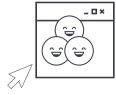

События проходят непосредственно на
платформе ux-marafon.ru. Незадолго до
события становится доступна страница
сайта, на которой будет проходить
трансляция: ux-marafon.ru/broadcast. Вы
также можете попасть на эту страницу через баннер на главной, пункт меню Трансляция и через ссылку в одном из инфо-писем,
которые мы вам пришлем перед событием.
Страница трансляции доступна только авторизированным пользователям, т.е.
сначала вам нужно будет залогиниться на
сайте.

онлайн-конференция для тех, кто делает
удобные цифровые продукты

Войти
Войти


Онлайн-конференция
UX-Марафон #22
3 вечера, 9 спикеров,
27-29 января 2021
UX-Марафон #22
Информационная архитектура
3 вечера, 9 спикеров,
основы IA, инструменты для применения
и практические кейсы
27-29 января 2021
Билеты Early Birds по самой низкой цене
Билеты Early Birds
Что такое UX-Марафон?
UX-Марафон – онлайн-платформа для обмена опытом, вдохновения и развития профессионалов в сфере UX, стремящихся сделать цифровой мир более понятным и удобным.
Станьте частью самого большого русскоговорящего
сообщества UX-специалистов!
Подключайтесь к нашему пространству для профессионального роста.
Получайте актуальные знания, знакомьтесь с методологиями и инструментами, общайтесь с теми, кто определяет тренды UX-дизайна.
Развивайтесь с нами!
5 лет
каждые 3 месяца
150+
спикеров-практиков
5000+
довольных зрителей
Почему UX-Марафон?
Практические знания
Вы получаете концентрированную практическую информацию, которую можно сразу применять. Все спикеры – практики, готовые делиться кейсами, цифрами и рабочими документами, которые используют сами.
Самый свежий опыт
Вы получите самую свежую информацию от топ-специалистов, которая еще не описана в статьях и книгах. Наши эксперты рассказывают, какие навыки сейчас важны, как повышать компетентность и развиваться, где искать вдохновение и поддержку.

Общение с профессионалами
В течение онлайн-конференции вы можете задавать вопросы спикерам и общаться с другими участниками сообщества. Общение в сообществе продолжается и после события.

Удобный формат
Доклады можно смотреть одному и с командой, онлайн – во время конференции или после – в записи. Доступные вам видеозаписи, презентации, полезные материалы и сертификат участника будут хранится в одном месте – на нашей платформе ux-marafon.ru

Сертификат
Сертификат участника на русском и английском языке повысит ценность вашего портфолио.
С 2015 года выступали специалисты 120+ компаний


Что говорят зрители про событие?

Евгений Годлевский
Lead Product Designer, ProDoza
Лучшее событие по UX на русском языке. Экспертная панель впечатляет и оправдывает. Даже если тема очередного марафона не связана напрямую с вашей работой, пару-тройку действительно ценных UX-инсайтов всегда ухватите из эфира. Короче, невозможно не рекомендовать!

Дмитрий Амелин
Co-Founder, Playliner.com
Благодарю организаторов за такой превосходный формат конференции! Спикеры как всегда на высоте, делятся ценным многолетним опытом, накопленным крупными компаниями. Поверьте, это заметно изменит ваш продукт в лучшую сторону. На мероприятии много инсайдерской информации без "воды". Все методики можно внедрять на практике мгновенно, результат от изменений просто отличный! С удовольствием буду ждать новых мероприятий!

Асия Усяева
UX researcher, Пятёрочка
UX-марафон - это квинтэссенция полезностей как для начинающих, так и для продвинутых. Спикеры без воды и с юмором описывают реальные кейсы и обсуждают работающие методы. Для меня ценно мое время и с учётом обилия информации очень жаль растратиться и пропустить что-то действительно важное и нужное. А на UX-марафоне ни одна минута не проходит впустую.

Валерия Накушнова
Продуктовый дизайнер, независимый специалист
Ценность UX-марафона в том, что каждый раз получаешь релевантный опыт практикующих профессионалов. Такой, каким он складывался в действительности: путем экспериментирования, проверки гипотез и поиска работающих решений. Это кажется полезнее, чем ряд кейсов, опубликованных для самопродвижения. А среди всех мероприятий, на которых я бываю нередко, вы точно лучшие. И по уровню глубины презентуемых тем, и по уровню знаний спикеров материалов. Плюс ориентируетесь не только на совсем новичков.

Юлия Высоцкая
UX/UI Дизайнер, Conversor
В начале 2020 года я задалась целью за год повысить свои скилы как минимум вдвое. И вот в один день в очередных поисках свежей и релевантной! информации я наткнулась на UX марафон. Первый мой марафон был в апреле и вот уже второй в июле. Прослушав все выступления, могу с уверенностью сказать что это самая лучшая и релевантная! информация, которая мне очень помогла узнать и разъяснить многие моменты которые раньше были непонятны. С нетерпением жду следующий марафон осенью.

Степан Воеводин
Старший UX/UI Designer, Мое Дело
Очень нравится это мероприятие. Удобный формат, можно смотреть не выходя из дома. Очень много полезной информации, можно задавать вопросы спикерам в чате. Всегда интересные докладчики. Еще ни разу не пожалел об участии в таком мероприятии.
Спикеры
Валерия Курмак
Руководитель практики
Human Experience
AIC
Human Experience
AIC
Михаил Галушко
Руководитель UX-направления
Центр Финансовых
Технологий
Центр Финансовых
Технологий
Павел Шерер
Партнер,
продюсер и архитектор
Цифровая артель
Eleven
продюсер и архитектор
Цифровая артель
Eleven
Анастасия Попова
Руководитель направления
продуктового дизайна
Альфа-Банк
продуктового дизайна
Альфа-Банк
Сергей Петров
Дизайн-проектировщик
Почтатех
Почтатех
Денис Васильев
Руководитель проектов
AIC
AIC
+ еще 3 крутых спикера
Внимание!
В этот раз у нас новый формат! 3 вечера по 3 доклада
В этот раз у нас новый формат! 3 вечера по 3 доклада
Программа
27-29 января 2021, 18:30-21:00 Мск

Разбираемся с основами
информационной архитектуры
информационной архитектуры

Изучаем
инструменты
инструменты

Смотрим
кейсы компаний
кейсы компаний

Среда, 27 января

Александра
Постовалова
Постовалова
Основатель и организатор
UX-Марафон
UX-Марафон
открытие конференции
Впервые UX-Марафон будет проходить три вечера. Поэтапно разберемся с различными
аспектами информационной архитектуры.
В первый вечер мы познакомимся с самим понятием информационной архитектуры (IA),
ее основами и нюансами применения.
Второй вечер будет практическим: 3 спикера - 3 инструмента, 3 подхода к построению
информационной архитектуры.
Спикеры расшарят свои экраны, покажут, как они работают и ответят на вопросы зрителей.
В третий вечер закрепим полученные знания на свежих примерах построения IA. Узнаем, как создавалась информационная архитектура
для Банка России и других компаний.
Цель этого марафона - вместе разобраться со сложной темой IA и создать фундамент для
самостоятельных действий в этом направлении.
.png)
Валерия Курмак
Руководитель практики
Human Experience
AIC
Human Experience
AIC
Ошибки при проектировании или какую роль в доступности
сайтов и приложений ИА играет для незрячих
сайтов и приложений ИА играет для незрячих
-
1. Что такое accessibility и инклюзивный дизайн
-
2. Как применять WCAG и ГОСТР 52872—2019 к ИА
-
3. Как спроектировать навигацию для незрячих пользователей
-
4. Почему это важно
-
5. Сколько стоит создание доступного цифрового продукта
+ 2 спикера
Четверг, 28 января
Михаил Галушко
Руководитель
UX-направления
Центр Финансовых
Технологий
UX-направления
Центр Финансовых
Технологий
Использование ментальных карт при работе с информационной
архитектурой на примере XMind
архитектурой на примере XMind
- 1. Определяем ключевые инструменты, точки принятия решения,
навигационные принципы -
2. Категоризируем информационные объекты по общим признакам и исходя
из потребностей конечного пользователя -
3. Определяем формат схемы информационной архитектуры и устанавливаем
взаимосвязи между отдельными объектами. -
4. Насыщаем информационную архитектуру обозначениями, углубляя
детализацию -
5. Используем информационную архитектуру как инструмент коммуникации
в команде
Павел Шерер
Партнер, продюсер
и архитектор
Цифровая артель Eleven
и архитектор
Цифровая артель Eleven
Собираем с нуля IA
На примере реального некоммерческого проекта соберем простую информационную
архитектуру “с нуля” с помощью Confluence и сервиса diagrams.net. Рассмотрим такие
понятия, как “типизация”, “сущности”, “классификация”.
По итогам выступления зрители научатся основным принципам формирования IA с помощью указанных инструментов.

Анастасия Попова
Руководитель направления
продуктового дизайна
Альфа-Банк
продуктового дизайна
Альфа-Банк
Тема уточняется
Пятница, 29 января

Сергей Петров
Дизайн-проектировщик
Почтатех
Почтатех
Инфоархитектурный разбор: сервисная платформа для операторов в отделениях
Операторы в отделениях связи работают с программной платформой, в которую встраиваются сервисы, разнородные и непохожие во всём. Необходимо залезть в процессы и технологии, пересобрать платформу в виде эко-системы, установить интерфейсный стандарт для включаемых в неё модулей. Пробуем с помощью инфоархитектурного рассмотрения декомпозировать пользовательское восприятие всей системы. Я покажу что получилось в результате такого рассмотрения, и что мы делаем с этим дальше

Денис Васильев
Руководитель проектов
AIC
AIC
Информационная архитектура нового сайта Банка России
- • Когда UX важнее “дизайна”
- • Кто составляет аудиторию сайта Банка России и как она использует ресурс
- • Как строили информационную архитектуру сайта ЦБ РФ
- • Как мы провели редизайн сайта Банка России
+ 1 спикер
Как проходит UX-Марафон?
3 вечера по 3 доклада
9 выступлений по 40-60 минут
Вы смотрите трансляцию в офисе или дома, с командой или самостоятельно.
После каждого доклада -
20 минут на общение со спикерами
На протяжении всего события и после - общение в чате с другими участниками и спикерами
После события: записи докладов
+ полезные материалы, презентации спикеров, сертификат участника, чат со спикерами и зрителями
Билеты
Для физических лиц
Для юридических лиц
До повышения цен осталось 2 дня
Билет на UX-Марафон #22 "Информационная архитектура"
- Онлайн участие
- Видео докладов
- Скачивание докладов
- Чат со спикерами
- Сертификат участника
- Полезные материалы
- Презентации
3 100 ₽
4 500 ₽
Купить
 Продукт выбран
Продукт выбран
 Продукт выбран
Продукт выбран
Абонемент на 2021 год
4 события
UX-Марафоны #22-25
-
Онлайн-участие
в UX-Марафонах #22-25 -
Видео докладов
UX-Марафонов #22-25 - Скачивание докладов
- Чат со спикерами
-
Сертификаты участника
UX-Марафонов #22-25 - Полезные материалы
- Презентации
11 400 ₽
17 000 ₽
Купить
 Продукт выбран
Продукт выбран
 Продукт выбран
Продукт выбран
Билет на
UX-Марафон #22
со скачиванием
- Онлайн участие
- Видео докладов
- Скачивание докладов
- Чат со спикерами
- Сертификат участника
- Полезные материалы
- Презентации
5 200 руб
6 800 руб
Купить
 Продукт выбран
Продукт выбран
 Продукт выбран
Продукт выбран
Проверьте свои данные
Часто задаваемые вопросы (FAQ)
FAQ
Где проходит трансляция? Мне придет ссылка?
Как я узнаю, что покупка билета и оплата прошли успешно?
Вы получите письмо о подтверждении оплаты от системы оплаты, а также письмо от нас. После авторизации на сайте вы можете посмотреть ваши покупки в личном кабинете - просто кликнете на ваше имя в верхнем правом углу страницы.
Как оплатить участие от юридического лица?
Для получения счета и оплаты от юридического лица воспользуйтесь переключателем "Для юридических лиц", расположенным над билетами.
Мне нужно будет заводить аккаунт?
Да, если у вас еще нет аккаунта на ux-marafon.ru, то в процессе покупки вам нужно будет указать свои данные для регистрации. Мы спрашиваем только о том, что важно: имя и фамилия нужны нам для того, чтобы вы получили именной сертификат, адрес электронной почты - для авторизации на сайте и связи с вами.
Можно ли купить билет в день события?
Конечно! Точно также, как и до события - на странице ux-marafon.ru/new. Присоединяйтесь в течение события или смотрите записи докладов после.
Что такое полезные материалы, включенные в билет?
Это подборка ссылок, книг, статей и инструментов, которые упоминались спикерами и зрителями в чате в течение события.
Что если я не смогу посмотреть все доклады в день события?
Ничего страшного! Вы можете смотреть записи докладов в течение года после события, а также общаться в чате с другими участниками и спикерами.
Как получить сертификат участника и что он из себя представляет?
Сертификаты будут доступны примерно через неделю после события. Вы найдете их в личном кабинете - просто кликните на ваше имя в правом вернем углу страницы. Заполнив свои имя и фамилию на английском языке, вы получите сертификат, переведенный на английский. Пример сертификата можно посмотреть здесь.
Я купил(а) доступ к записи, когда смогу посмотреть?
После события мы смонтируем материал и выложим на платформу. Через неделю после события вы сможете посмотреть видеозапись события.